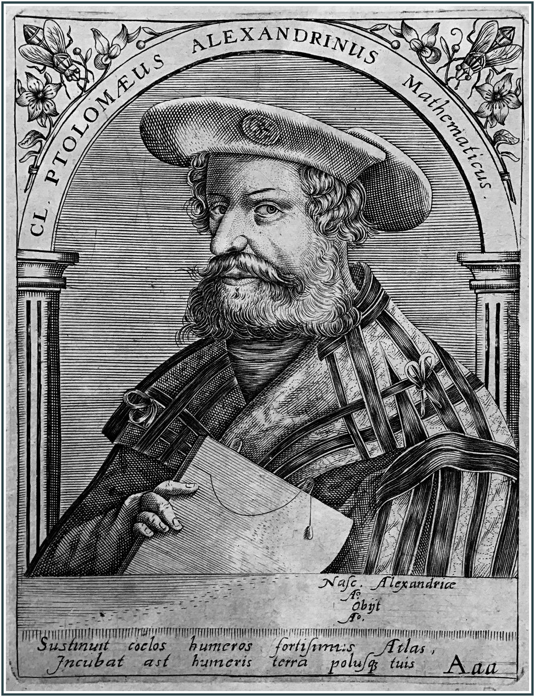

c. 100–170
Greco-Egyptian, Alexandria
Trigonometry, astronomy, geography
Claudius Ptolemy lived and worked in Alexandria in the 2nd century AD. Almost nothing is known about his personal life; even his first name "Claudius" merely suggests Roman citizenship, while "Ptolemy" was a common name in Hellenistic Egypt.
His masterwork, the Almagest (from the Arabic for "the greatest"), is the most influential astronomical text ever written. It synthesised the observational work of Hipparchus with Ptolemy's own extensions into a complete mathematical model of the heavens. For this course, its most important contribution is the chord table in Book I — a table of chord lengths for angles from 0.5 to 180 degrees in half-degree steps, accurate to about five decimal places. Since $\text{chord}(\theta) = 2\sin(\theta/2)$, this was effectively a sine table, and it was the most precise trigonometric table available for over a thousand years.
Ptolemy derived his chord table using a combination of geometric identities — including what we now call Ptolemy's theorem for cyclic quadrilaterals — and an interpolation method for values between his computed reference points. His geocentric model of planetary motion, while ultimately replaced by Copernicus and Kepler, was a genuine triumph of applied mathematics: it predicted planetary positions accurately enough for practical navigation and calendar-making for fourteen centuries.
| Phase | Page | Referenced for |
|---|---|---|
| Phase 0 | Trigonometry from Scratch | Extended Hipparchus' work into a full chord table in the Almagest |